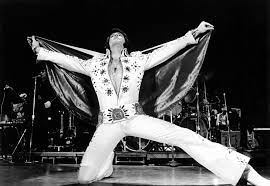
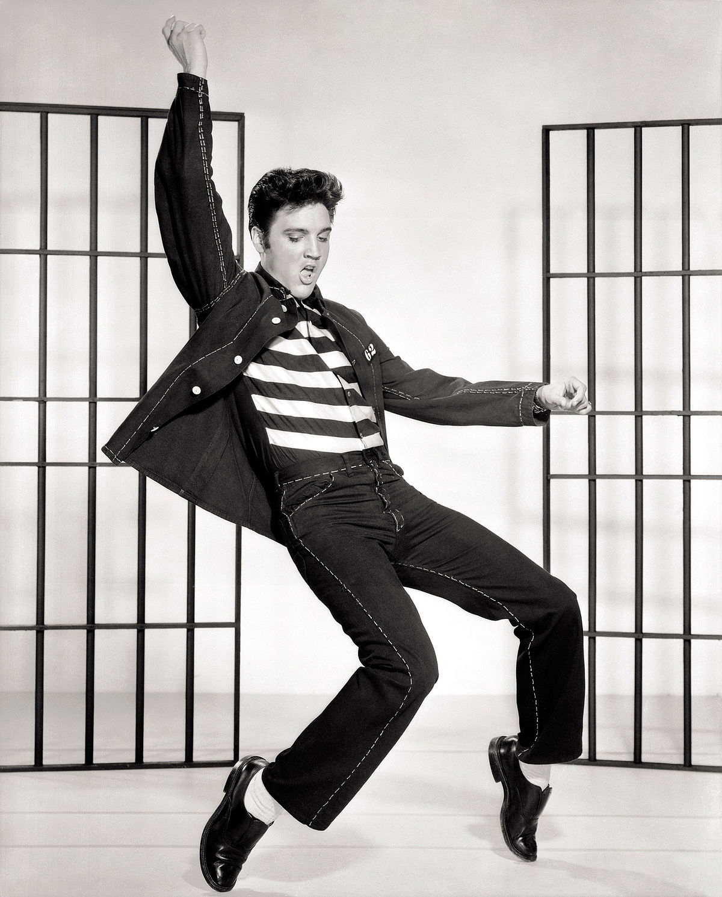
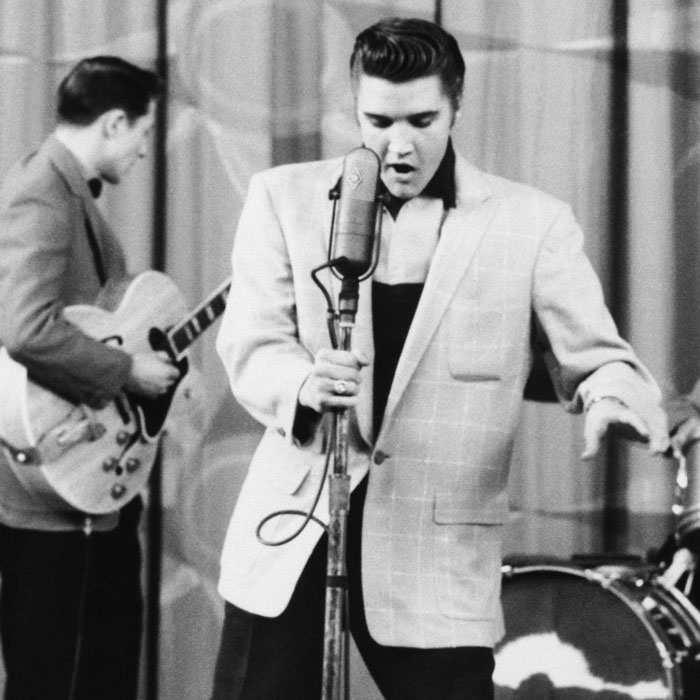
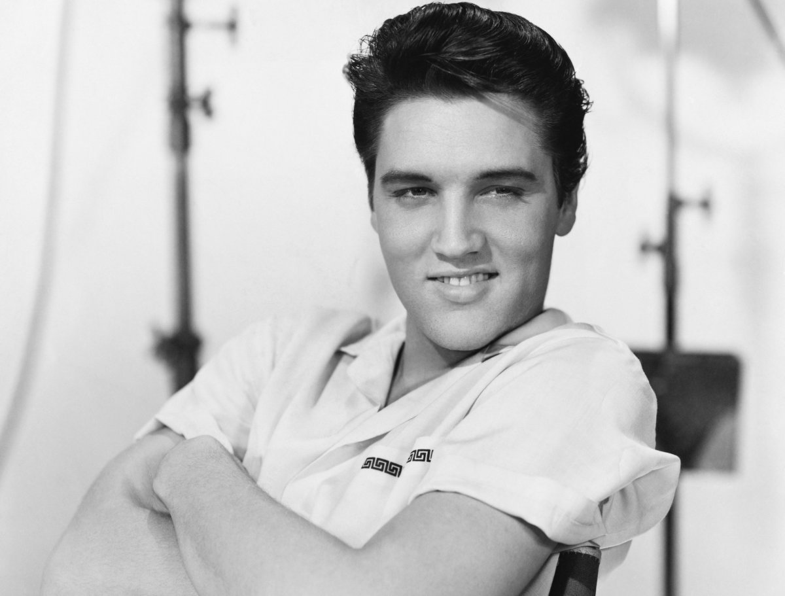
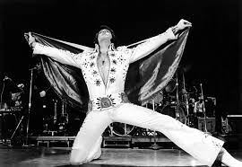
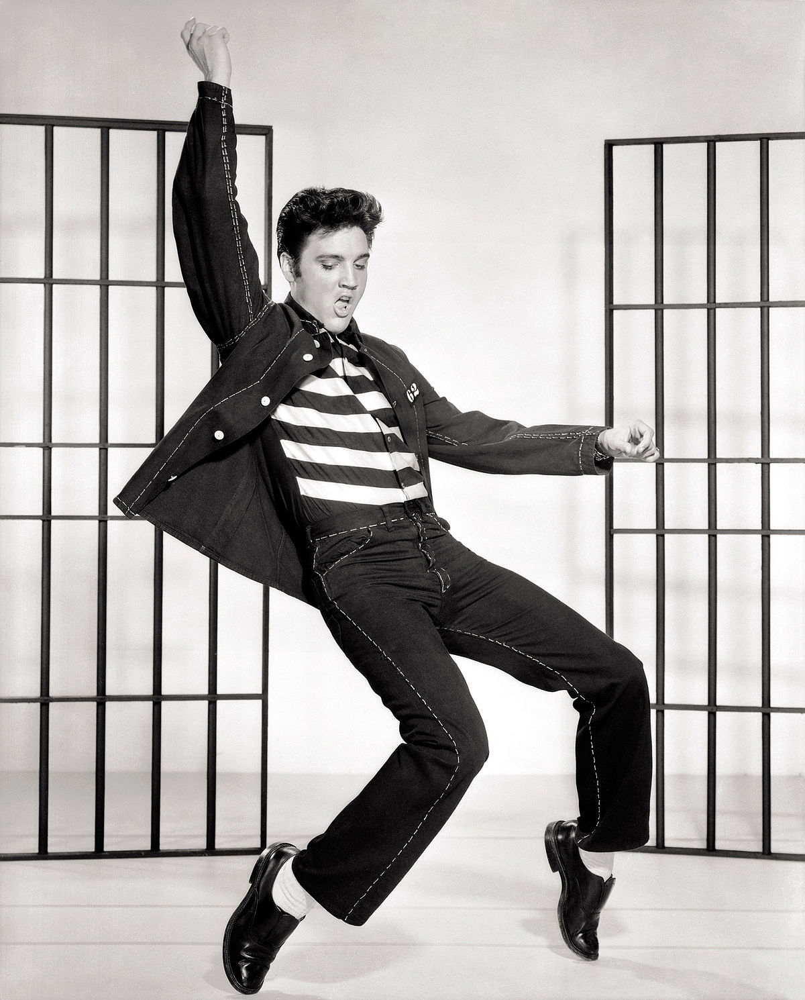
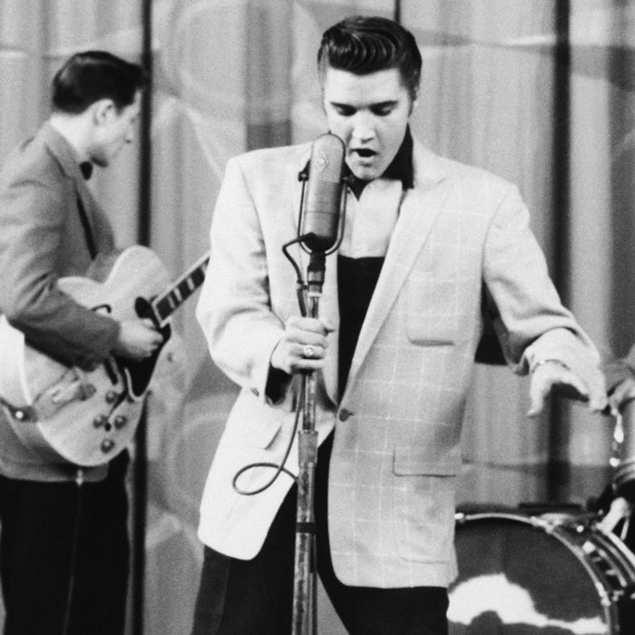
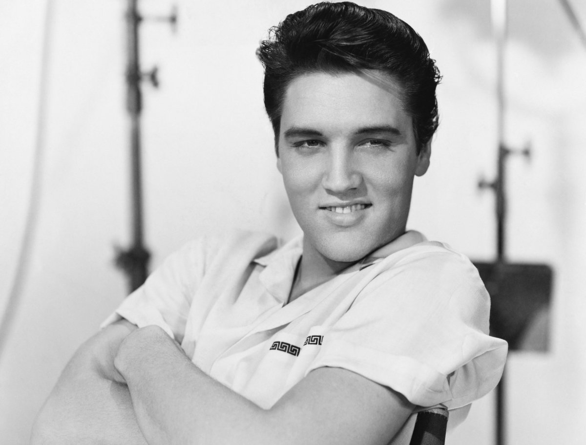

Elvis Presley
The King of Rock and Roll
 







Here's a time line of Elvis Presley's life:
- 1935 - Born in Tupelo, Mississippi on 8th January. His identical first born twin brother, Jesse Garon, was stillborn.
- 1946 - Elvis gets his first guitar which cost $12.95 at the Tupelo Hardware Store.
- 1948 - The family moves to Memphis.
- 1953 - Elvis graduates from Humes High School. The same year he drops into the The Memphis Recording Service (Sun Studios) and records My Happiness and That´s When Your Heartaches Begin.
- 1954 - Sun Studios owner Sam Phillips teams Elvis up with local musicians Scotty Moore (guitar) and Bill Black (bass). The breakthrough recording is Arthur 'Big Boy' Crudup´s That´s All Right. This song, backed with Blue Moon of Kentucky becomes the first of five singles Elvis will release on the Sun label.
- 1955 - Colonel Tom Parker replaces Bob Neal as Elvis' manager. Towards the end of the year, Elvis signs the famous RCA contract and re-releases the five Sun singles on the RCA label in the USA.
-
1956 - A lot happened during this year for Elvis...
- He was paired with the Jordanaires, who would remain his main back-up group until the late 60s.
- Heartbreak Hotel is released in the US, where it sells 300,000 copies in the first week and becomes his first Gold Record by selling over a million.
- Elvis Presley, his first album (and his first Gold Album) is released by RCA in the USA.
- He signs a seven-year movie contract with Hal Wallis and Paramount Pictures.
- Elvis hits the UK chart for the first time with Heartbreak Hotel at No.2 plus Blue Suede Shoes makes the Top 10 later that month.
- Hound Dog becomes Elvis' third Top 10 single in Britain.
- Elvis' first movie, Love Me Tender premieres in the USA. On the same day Blue Moon enters the UK chart.
- 1957 - Graceland is purchased as a home for Elvis. He finally lands his first UK number one single with All Shook Up.
- 1958 - Elvis is inducted into the U.S. Army.
- 1960 - Elvis is officially discharged from military service and becomes the first act in history to have five number ones in the UK. His fifth is It's Now Or Never.
- 1967 - Elvis and Priscilla get married.
- 1968 - Elvis and Priscilla's first child, Lisa Marie Presley, is born and he wins a Grammy in the gospel genre for Best Sacred Performance for How Great Thou Art.
- 1970 - Meets with US President Richard Nixon at the White House.
- 1971 - Elvis accepts the honour of being named One of the Ten Outstanding Young Men of the Nation by the United States Junior Chamber of Commerce (The Jaycees) as well as the Grammy Lifetime Achievement Award.
- 1972 - Priscilla files for divorce. Elvis has begun seeing Linda Thompson, a relationship that will last until late 1976
- 1973 - Wins a Grammy in the gospel genre for Best Inspirational Performance for He Touched Me.
- 1976 - Elvis and Linda Thompson, his girlfriend since 1972 will split. By the end of the month Elvis is with Ginger Alden, who will be with him until his death.
- 1977 - Elvis dies at the age of 42 from a heart attack.
- 2004 - More than 1,000 radio stations around the world simultaneously play "That's All Right", Elvis' first professional record, to commemorate the 50th anniversary of the recording of the track at Sun studios.
- 2005 - Elvis' record company began an 18-week long campaign of releasing a limited number of each of his former chart-topping singles, one per week, to commemorate what would have been his 70th birthday. This led to Elvis becoming the first artist to have 20+ number ones and the first to break the '1000 weeks in the Top 40' barrier.
“Til we meet again, may God bless you. Adios.”
-- Said in 1977 at the end of a concert during his last tour